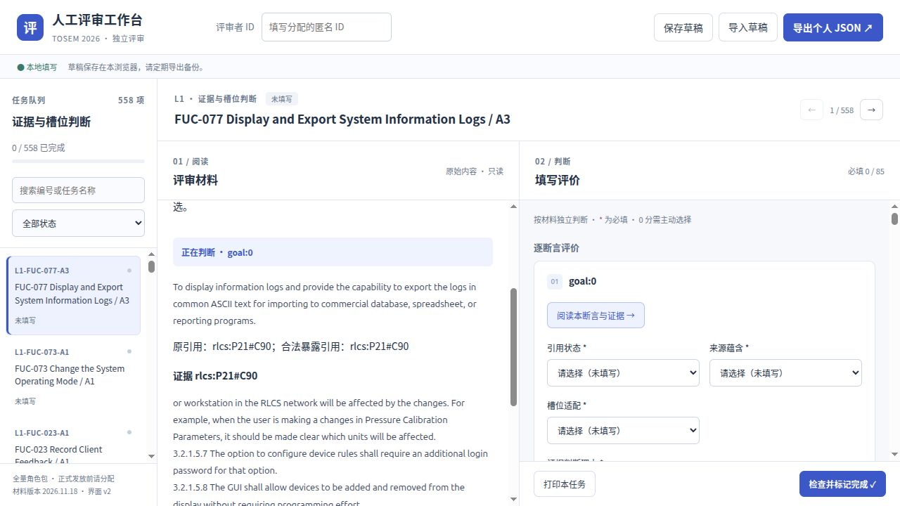
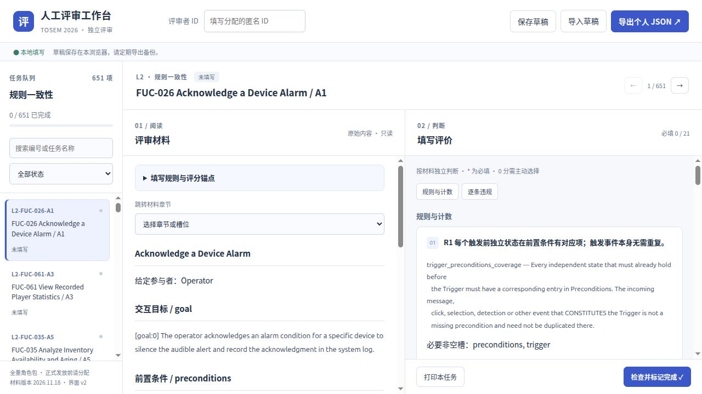
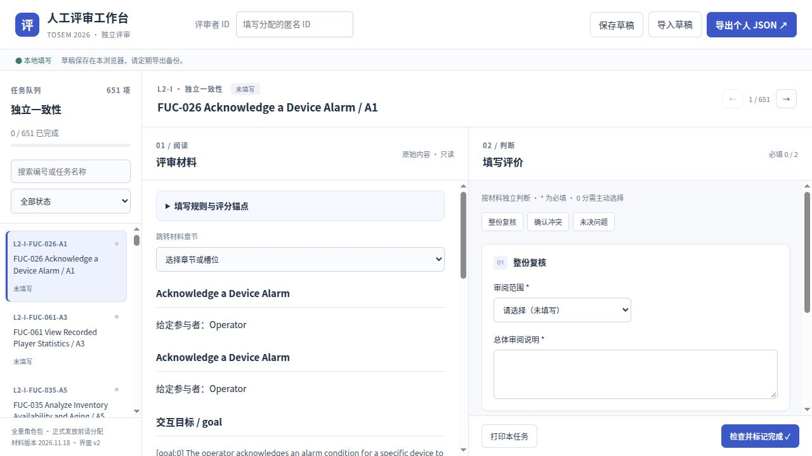
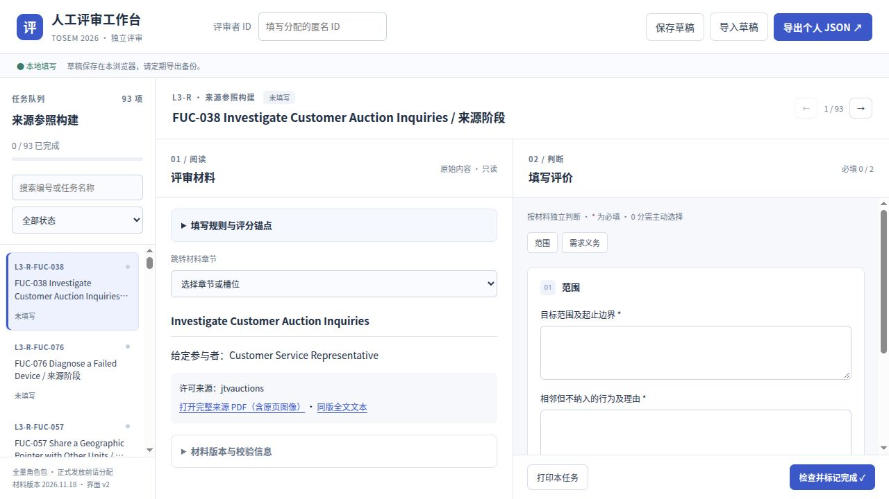
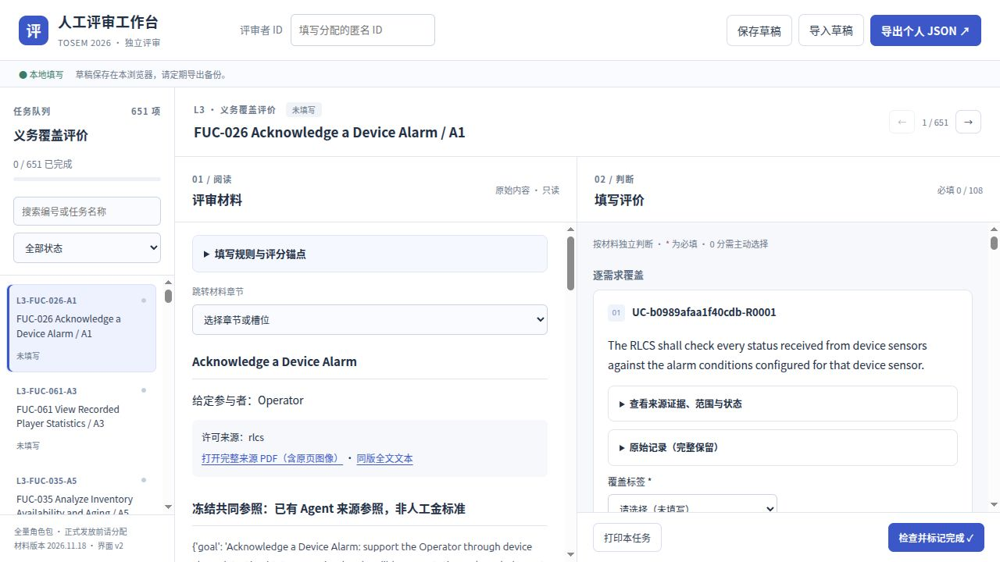
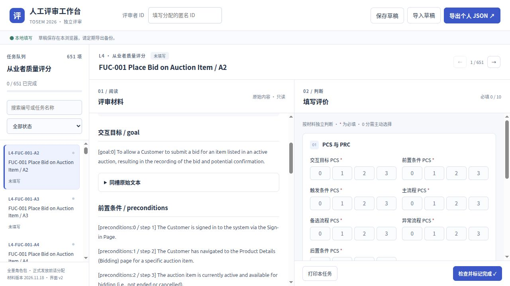
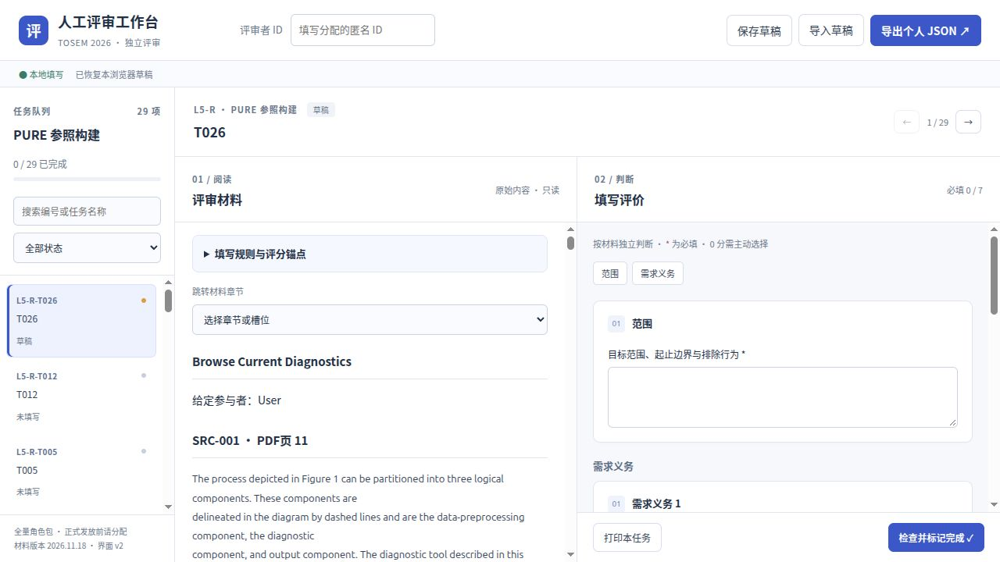
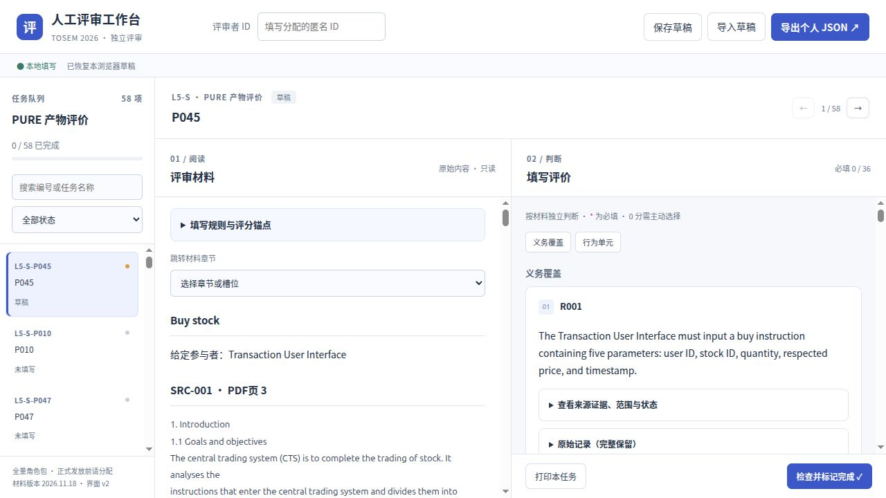

任务队列、材料阅读、结构化评分，围绕连续评审重新布局。覆盖全部 8 类角色表单，共 3342 项任务。
逐断言核验引用、蕴含关系与槽位适配。
按 R1–R7 判断适用性，记录违规明细。
记录独立发现的冲突与未决事项。
从来源材料界定义务、范围和证据。
对照参照义务逐项检查覆盖情况。
七槽 PCS 与整体 PRC 评分。
界定目标范围，提取可核验义务。
评价义务覆盖与行为单元。
点击图片查看原尺寸；页面可直接运行和填写。L5 截图中的“草稿”来自此前添加的空白行，不含评分结果。







